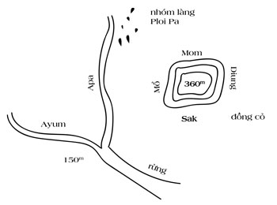

Một số người xem kỷ luật là nhàm chán. Nhưng đối với tôi, nó là tiền đề cho tự do.
- Julie Andrews
PHẦN KHÓ NHẤT CỦA PHÉP THUẬT
Trong bộ phim đình đám The Prestige của Christopher Nolan, một trò ảo thuật bao gồm ba phần. Phần đầu là lựa chọn từ khán giả, có thể là một lá bài. Kế đến là sự chuyển hóa tạo bất ngờ từ lựa chọn của khán giả, và phần cuối cùng là khó nhất – giữ bí mật của trò ảo thuật, khiến khán giả không biết cách thức vì sao.
“Phép thuật” của mô hình khởi nghiệp UNSCRIPTED cũng có phần tương tự. Khởi nghiệp chính là lựa chọn. Đem lại giá trị hữu ích cho mọi người là sự chuyển hóa. Và phần khó nhất? Đó là duy trì thành quả từ nỗ lực của bạn.
Nếu đưa cho một người đang làm công ăn lương 1 triệu đô-la; chỉ sau ba năm, họ quay trở về ngay tình trạng ban đầu: nhẵn túi. Một số người chỉ cần một năm. Bạn có bao giờ thắc mắc vì sao những người trúng số lại mất hết số tiền họ kiếm được? Họ thiếu đi một yếu tố để duy trì: kỷ luật. Kiếm tiền đã khó, nhưng để giữ được nó còn khó hơn.
Phần cuối cùng trong mô hình khởi nghiệp UNSCRIPTED là phần khó nhất: kỷ luật để duy trì thành quả từ nỗ lực của bạn. Sau khi bạn thành công trong việc mở rộng sản phẩm xuất sắc, bốn kỷ luật sau sẽ giúp bạn duy trì:

Giống như phần cuối trong mỗi trò ảo thuật, bốn kỷ luật này đóng vai trò quan trọng để duy trì thành quả từ nỗ lực của bạn. Bỏ qua bất kỳ kỷ luật nào, bạn sẽ đối diện với nguy cơ phải làm lại từ đầu.